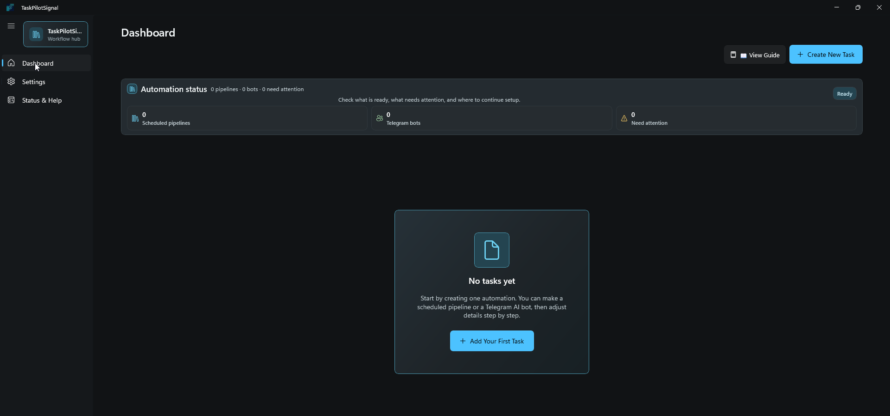
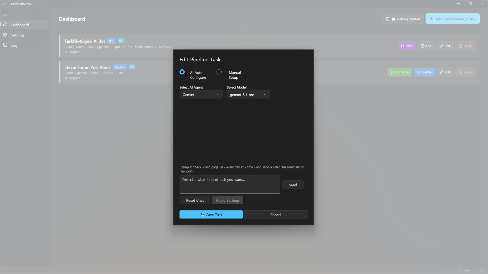
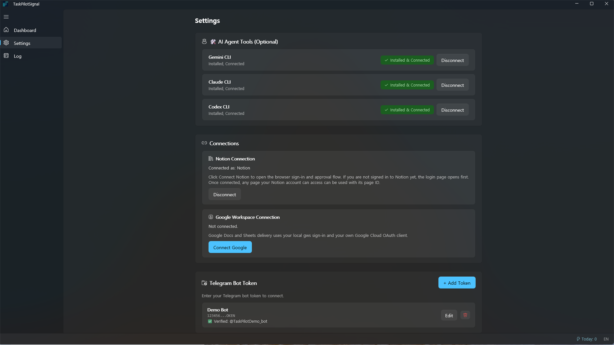
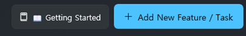
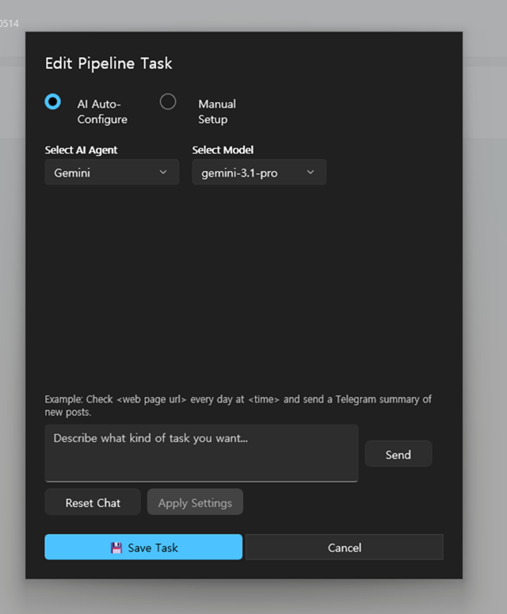
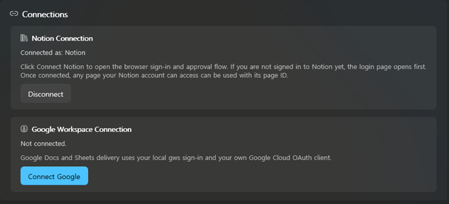
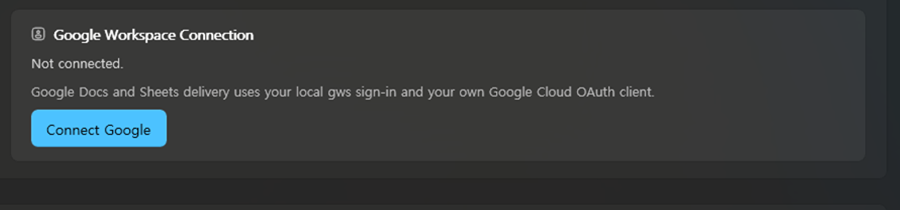
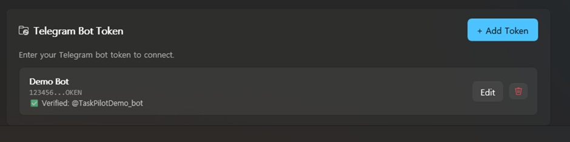

AI Pipeline Automation & Telegram Bot Manager
Microsoft Store launch planned for May 2026
AI 파이프라인 자동화 & 텔레그램 봇 관리 도구
2026년 5월 Microsoft Store 출시 예정
Create scheduled AI pipelines, manage Telegram bot assistants, and connect delivery targets from one native desktop app.
예약 AI 파이프라인, 텔레그램 AI 봇, 전달 대상 연결을 하나의 네이티브 데스크톱 앱에서 관리합니다.



Analyze YouTube and web content with AI, then automatically deliver to Notion, Google Docs, and Sheets.
Manage Claude, Gemini, and Codex CLI in one unified Telegram bot.
No coding required. A WinUI 3 desktop app designed for everyone on Windows.
Supported local secrets are protected with Windows DPAPI. The app does not rely on a separate developer-run backend.
YouTube, 웹 콘텐츠를 AI로 분석하고 Notion, Google Docs, Sheets로 자동 전달합니다.
Claude, Gemini, Codex CLI를 텔레그램에서 통합 관리합니다.
코딩 없이 사용할 수 있는 WinUI 3 데스크톱 앱. Windows 전용.
지원되는 로컬 민감 정보는 Windows DPAPI로 보호되며, 별도의 개발자 운영 백엔드에 의존하지 않습니다.
The most important setup paths are pipeline creation, Google Workspace connection, and Telegram bot token verification.


Click any screenshot to open it full size.


Click any screenshot to open it full size.

Click the screenshot to open it full size.
/newbot and follow BotFather's prompts./start or any message once./help - show available commands./ping - check whether the bot is alive./change ai gemini - switch the active AI provider./newsession - start a fresh AI conversation./resume - continue the saved session where available.https://blogs.windows.com/windowsdeveloper/tag/news/ every day at 09:00 and send a Telegram summary.가장 중요한 설정은 작업 파이프라인 생성, Google Workspace 연결, 텔레그램 봇 토큰 검증입니다.
스크린샷을 누르면 원본 크기로 볼 수 있습니다.
스크린샷을 누르면 원본 크기로 볼 수 있습니다.
스크린샷을 누르면 원본 크기로 볼 수 있습니다.
/newbot을 보내고 BotFather의 안내를 따릅니다./start 또는 아무 메시지를 한 번 보냅니다./help - 사용할 수 있는 명령어를 확인합니다./ping - 봇이 정상 작동 중인지 확인합니다./change ai gemini - 사용할 AI 제공자를 변경합니다./newsession - 새 AI 대화를 시작합니다./resume - 가능한 경우 저장된 세션을 이어갑니다.https://blogs.windows.com/windowsdeveloper/tag/news/를 매일 09:00에 확인하고 텔레그램으로 요약을 보냅니다.Per-task instructions will sync to provider-specific AI agent files for higher-quality results.
Review task-level token usage, provider limit status, and documented plan reference limits in one place.
Continue scheduled pipeline results as a Telegram AI bot conversation.
작업별 지침을 AI 제공자별 에이전트 파일로 동기화해 더 높은 품질의 결과를 목표로 합니다.
작업별 토큰 사용량, 제공자 제한 상태, 요금제별 공식 참고 한도를 한 곳에서 확인할 수 있게 합니다.
예약 파이프라인 결과를 텔레그램 AI 봇 대화로 이어갈 수 있게 합니다.
{kind=link}
{kind=link}
{kind=link}
{kind=link}
{kind=link}